Tracking code in Git/GitHub
Introduction
What is Git?
According to Git’s website, “Git is a free and open source distributed version control system.” So what does that mean? Let’s break it down. First, Similarly to R, Git is available to anyone with a computer and access to the internet free of charge. Anyone can install and use it, and anyone can contribute to the project (if they have the technical know-how).
As for the second half, a version control system (VCS) is a tool that enables teams as small as a single person or as large as a multinational corporation to track changes in code over time and to integrate changes made by a decentralized team of developers.
For our purposes, Git enables us to create reproducible analysis code bases, where the full history of the analysis is available to ourselves and those which we choose to share it with.
What is GitHub?
Command Line Basics
In order to use Git from the command line (Terminal or Git Bash), a certain level of basic commands will be needed to navigate the files on your computer. Below is a list of commands that will help you navigate your directories and accomplish basic tasks using the command line.
-
ls- List subdirectories and files in current directory -
pwd- Print working directory -
cd- Change directory (i.e., navigate to a different folder)-
cd MyFolder- Move to the folderMyFolderlocated in current working directory -
cd Path/To/MyFolder- Move to the folderMyFolderlocated atPath/To/inside the current working directory -
cd ..- Move to parent directory (i.e. one folder back) -
cd /- Move to root directory -
cd ~- Move to home directory
-
-
mkdir- Make directory -
rm <filename>- Remove file
Notes
Terminal / Git Bash
The instructions which follow attempt to be applicable to both MacOS and Windows platforms. However, some key differences do exist between the two operating systems. In most of these situations we have created separate instructions for Windows and MacOS. However, for sections where MacOS and Windows are functionally the same, only a single section is provided. In these sections, some language used may reference Terminal, and in those cases you should substitute Git Bash if you are using Windows operating system.
Main vs Master
Historically, the default branch in a new Git repository was named master. However, in 2020 a push to remove unnecessary references to slavery led GitHub and other companies to change the default branch name to main. The instructions which follow will assume the default branch name is main and will show you how to setup your local Git configuration to default to main.
However, due to the relative recency of this change, you may encounter repositories that have master as the primary branch. In such situations, all the instructions which follow will still be applicable, but you will need to substitute main for master.
Getting Started
Installing Git
MacOS
Open Terminal and run the command git --version. If you don’t have Git installed already, you will be prompted to install. Follow the instructions provided in the Terminal or pop-up window to install Git.
Windows
Git and Git Bash come included as part of the Git For Windows package. Download and install Git For Windows like other Windows applications. Once downloaded find the included .exe file and open to execute Git Bash.
Creating GitHub Account
Go to https://github.com/ and click Sign Up in the upper right hand corner. Follow the instructions to create an account, choosing an account name that is easily identifiable as belonging to you (i.e. “firstname-lastname” or something similar).
NOTE: If you already have a personal GitHub account, you may continue to use it for your work at CIDA if your account name is easily identifiable as belonging to you (i.e. if you have an account name like “firstname-lastname” or something similar).
Configure Git
To associate your local Git configuration with your name and Email, run the commands below in Terminal or Git Bash. Here, your_email@cuanschutz.edu should be substituted with the email associated with your GitHub account. If you are using a preexisting personal GitHub account, this may or may not end with cuanschutz.edu.
git config --global user.name "Firstname Lastname"
git config --global user.email "your_email@cuanschutz.edu"Additionally, your local Git should be configured to make main the default branch name. To do so, run the following command in Terminal/GitBash:
git config --global -add init.defaultBranch mainRequesting CIDA GitHub Access
Following account creation, send an email containing your GitHub username to ryan <dot> peterson <at> cuanschutz <dot> edu and max <dot> mcgrath <at> cuanschutz <dot> edu to request access to CIDA’s GitHub organization (please send email from your cuanschutz.edu email address).
Setting Up SSH
The below instructions are up-to-date as of 10/05/22. Newer instructions along with additional troubleshooting may be available from GitHub
MacOS
- Check for Existing SSH Keys
- Open Terminal
- Enter
ls -al ~/.sshto see if existing SSH keys are present by looking for the following filenames:- id_rsa.pub
- id_ecdsa.pub
- id_ed25519
- If you see any of these files present, proceed to Step 3. Otherwise continue with Step 2.
- Generate a new SSH key
Open Terminal
Enter
ssh-keygen -t ed25519 -C "your_email@example.com"substituting in the email address associated with your GitHub accountWhen you’re prompted to “Enter a file in which to save the key,” press Enter. This accepts the default file location.
At the prompt, type a secure passphrase
Start the ssh-agent in the background by running
eval "$(ssh-agent -s)"-
Open the configuration file with
open ~/.ssh/config- If the file doesn’t exist create it with
touch ~/.ssh/configthen use the above command to open it
- If the file doesn’t exist create it with
-
Edit
~/.ssh/configto contain the following lines:::: {.cell}
Host * AddKeysToAgent yes UseKeychain yes IdentityFile ~/.ssh/id_ed25519:::
Add your SSH private key to the ssh-agent and store your password in the keychain by running
ssh-add --apple-use-keychain ~/.ssh/id_ed25519
- Add SSH key to GitHub account
- Copy the SSH public key to your clipboard with
pbcopy < ~/.ssh/id_ed25519.pub - Open GitHub in a web browser, log in
- Go the the upper right hand corner, click your profile photo, and select Settings
- Select SSH and GPG keys in the menu on the left
- Click green New SSH key button
- Enter a title for the SSH key in the Title field (use descriptive title like “CIDA MacBook Pro”)
- Select Key type as “Authentication Key”
- Paste your key into the Key field
- Click Add SSH key
- Copy the SSH public key to your clipboard with
- Verify connection
Test access to GitHub SSH with
ssh -T git@github.com-
If you see the following message, verify that the fingerprint you see matches GitHub’s public key fingerprint (link). If it does, type
Yes::: {.cell} ```{.bash .cell-code} > The authenticity of host 'github.com (IP ADDRESS)' cant be established. > RSA key fingerprint is SHA256:nThbg6kXUpJWGl7E1IGOCspRomTxdCARLviKw6E5SY8. > Are you sure you want to continue connecting (yes/no)? ``` ::: Verify that the resulting message contains your username. If you receive a “permission denied” message, see Error: Permission denied (publickey)
Windows
- In Git Bash, type
ssh-keygen - Press enter to save the SSH key to the default location
- Enter a password to password protect your SSH key or leave blank and hit
Enterto proceed without a password - You will recieve a message saying your public key has been saved in
c/Users/username/.ssh/id_rsa.pub, typecat c/Users/username/.ssh/id_rsa.pubto output the key - Copy and paste the key
- Add SSH key to GitHub account
- Open GitHub in a web browser, log in
- Go the the upper right hand corner, click your profile photo, and select Settings
- Select SSH and GPG keys in the menu on the left
- Click green New SSH key button
- Enter a title for the SSH key in the Title field (use descriptive title like “CIDA MacBook Pro”)
- Select Key type as “Authentication Key”
- Paste your key into the Key field
- Click Add SSH key
Setting up SSO
Copy/distill instructions here: https://docs.github.com/en/enterprise-cloud@latest/authentication/authenticating-with-saml-single-sign-on/about-authentication-with-saml-single-sign-on
- After being granted access to the CIDA-CSPH GitHub organization and setting up SSH, go to https://github.com, log in
- In the upper-right corner of any page, click your profile photo, then click Settings
- Select SSH and GPG keys in the menu on the left
- To the right of the SSH key you’d like to authorize, click Configure SSO. If you don’t see Configure SSO, ensure that you have authenticated at least once with the CIDA-CSPH organization by visiting https://github.com/orgs/CIDA-CSPH/, accessing a non-public repository, and signing in with your CU login
- You will see CIDA-CSPH listed. Click Authorize to the right.
Creating New Project
- Create project folder on your local computer by calling
CIDAtools::create_project()inR - Initialize git repository by navigating to folder (
cd Path/To/Folder) then using the commandgit init - Stage file changes
git add . - Create initial commit with
git commit -m "Initial commit" - Create empty repository in CIDA-CSPH GitHub organization
- In a web browser, navigate to https://github.com/orgs/CIDA-CSPH/repositories
- Sign in using your CU login
- Click the green
New repositorybutton - Enter the name of your repository
- Do not add a template, README, .gitignore, or license file
- Click
Create repository
- Add remote to local repository with
git remote add origin git@github.com:CIDA-CSPH/<your-repository>.git(this SSH link can be copied from the empty GitHub remote repository you’ve just created). - Push work to GitHub with
git push origin main
Cloning Existing Project
- Navigate to GitHub remote repository
- Click green “Code ∨” button
- Click “SSH” then copy link
- Clone repository with
git clone git@github.com:CIDA-CSPH/<your-repository>.git
Regular Workflow
-
Add and commit changes
cd Path/To/Directory git add . git commit -m "My commit message" -
Fetch and merge any changes (see Handling Merge Conflicts below)
git fetch origin main git merge origin/main ## Fix any merge conflicts git commit -m "Brief description of changes (<=50 characters)" -
Push all new commits
git push origin main
Handling Merge conflicts
In the case that another user has modified and committed changes to a file that you have modified in one of your recent commits, when you run git pull you may be notified that you have a merge conflict and need to resolve those conflicts before you can push your changes to GitHub. To do so:
-
After running
git merge origin/mainand being notified that you have merge conflicts, rungit statusto see which files have conflicts (they will be listed withboth modified:in front of them)- Note: On newer version of Git you may receive an error saying “You have divergent branches and need to specify how to reconcile them”
- In this case, you can add an indicator to pull without rebasing with
git merge --no-rebase origin/main
Open those files in a text editor (RStudio, Vim, textEdit, Notepad++, etc.)
-
Here, you will see some sections of code with:
<<<<<<< HEAD # Version 1 of Code ======= # Version 2 of Code >>>>>>> commit_hash Here, the section of code between
<<<<<<< HEADand=======is the local version of the code, while the code between=======and>>>>>>> commit_hashis the version of the code pulled from the remote (i.e., GitHub)To fix the merge conflict, simply select which version of the code you want to keep and delete the other version along with
<<<<<<< HEADand=======and>>>>>>> commit_hash. Note that you may also need to mix and match between the two sections of code, but always delete the conflict markers.Save your changes
-
Return to Terminal/Git Bash and add commit changes
git add . git commit
Additional Git Topics
Branching
Stashing changes
Helpful Git Commands
FAQ
Do we use GitHub? Or GitLab? Didn’t we just switch to GitHub?
Either are currently viable options. We are currently transitioning from GitLab to GitHub, so if you are picking this up for the first time, I suggest using GitHub (and will call both “GH” from here on for simplicity).
Where does my main analysis code “live”? When I’m committing and pushing to GitHub/Lab am I just making backups of my work that has its “home” on the P: drive? Or should the code “live” on the cloud in GitHub/GitLab, and every time I want to work with it, I should pull it down?
Your code will live on GH. Repos from GH can be cloned to wherever you want; locally, the P drive, etc. So when you need to run your code, your machine can read it from a local or network location. It’s best practice to pull from GH before you need to run anything for a project in case someone’s changed (if nothing has changed it will say “You repo is up to date”).
Should I even then have a version of my code on the P: drive at all?
It’s up to you
If I do, and I pull from GitHub/Lab, am I replacing the code on the P: drive?
Yes, but only if something’s changed on the GitHub server. You can also easily “checkout” earlier versions of the repository from previous points in time, so the older code is never lost.
One advantage that people talk about a lot for using Git is that it can “merge” files from multiple people. How does this actually work?. What’s to prevent person A from pulling the syntax and making edits, person B pulling the syntax and making edits, and then both people pushing up to a Git server? Wouldn’t there then be 2 versions of the file, neither of them fully correct? How is this an upgrade from not having Git?
Git will force the person who pushes second to fix any merge issues in the code before pushing back to GitHub in this case. There are also more tools available such as branching if this issue comes up often for a particular project.
I don’t really use that much version control now anyways, ad-hoc or otherwise. Is this bad? Have I just not been exposed to projects that change enough to merit it?
CIDA requires code be tracked in Git and GitHub. Your future self will thank you.
Often in my code I include additional “justification” code that’s commented out. For example, if I merge two datasets on ID, I also check the dimensions of the new merged dataset to make sure it is what I expected. Or, if I write a function, I also hard-code a version of the function to make sure the function actually does what it’s supposed to. These examples are a bit trivial, but I think they illustrate well the sort of “double-checking” that I sometimes include code for. Is this the sort of thing you think is valuable to include in code as a comment? Or does that bother some people, and should it be taken out of the syntax after the double-check has been completed?
I think what you are referring to is “unit testing”, which is in fact good practice. I would put all new functions you create in a separate helper-functions.R file which can be scripted from your Rmd, and you can also have your (self-contained) unit tests there as well.
Isn’t there a CIDA element to the GH platform that we need to use, that is more “secure” or something? Or are we only supposed to use our personal GH accounts for all our work?
CIDA has a GitHub “organization” that is part of the CU GitHub Enterprise account. Membership to this organization can be merged with your personal GitHub account or a new GitHub account. All university- (CIDA-) related repos should live under this umbrella. The main page is https://github.com/CIDA-CSPH; you will need an account invitation; please contact a member of the Research Tools committee for an invitation.
Git Kraken (Legacy)
This section will walk through how to set up GitKraken to interface with the CIDA GitHub, allowing you to easily push/pull projects between your working directory and GitHub.
First, you will have to download GitKraken at https://www.gitkraken.com/download. Once installed, you will sign in with the GitHub account associated with the CIDA GitHub. This will take you to the SSO associated with the CIDA GitHub, which you will then authorize and sign onto.
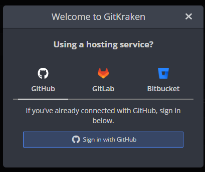
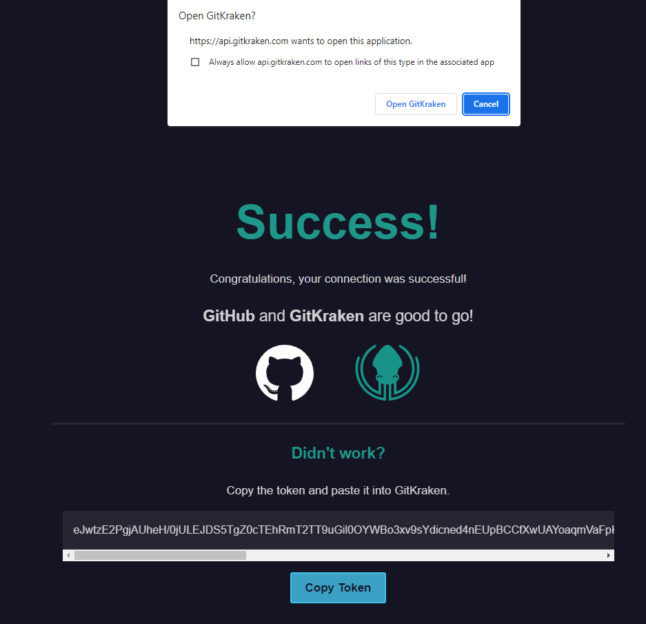
Once you have logged into GitKraken with you GitHub account, you will need to connect it to GitHub. The default GitKraken screen has a panel called “Integrations”: click on GitHub. From here, there are two possibilities: if you click on “Connect to GitHub” it may take you to the SSO again and you can log in that way (slightly repetitive). Or, if prompted to use the OAuth or Personal Access token, you can do the following: go to your “Settings” tab on GitHub, click on “Developer Settings”, and then click on “Personal access tokens” to generate a token for 90 days, making sure to select “repo” (along with other scopes as needed).
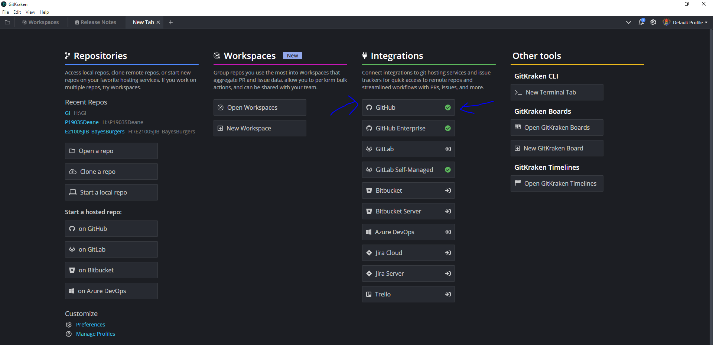
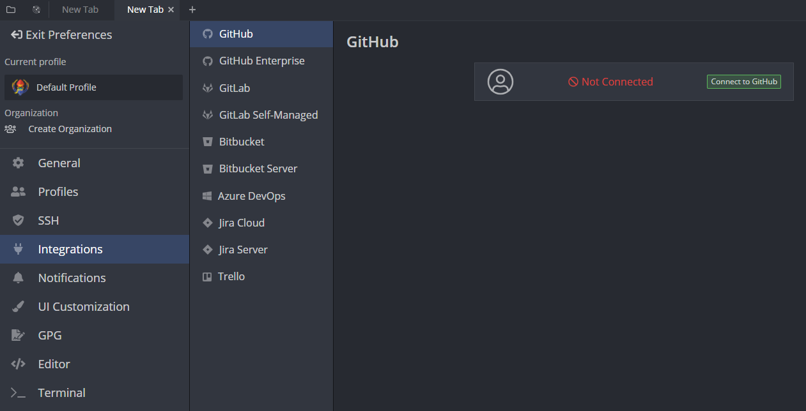
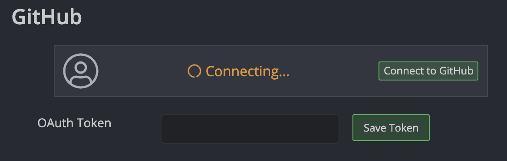
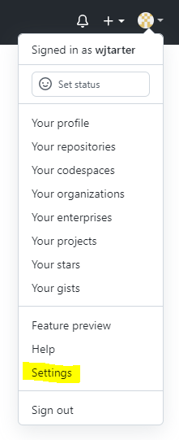
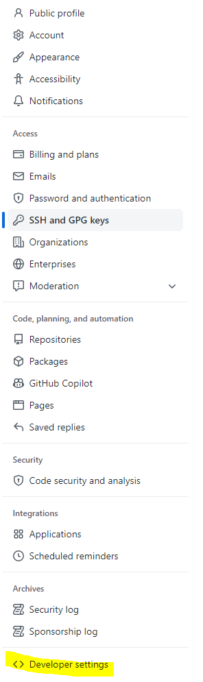
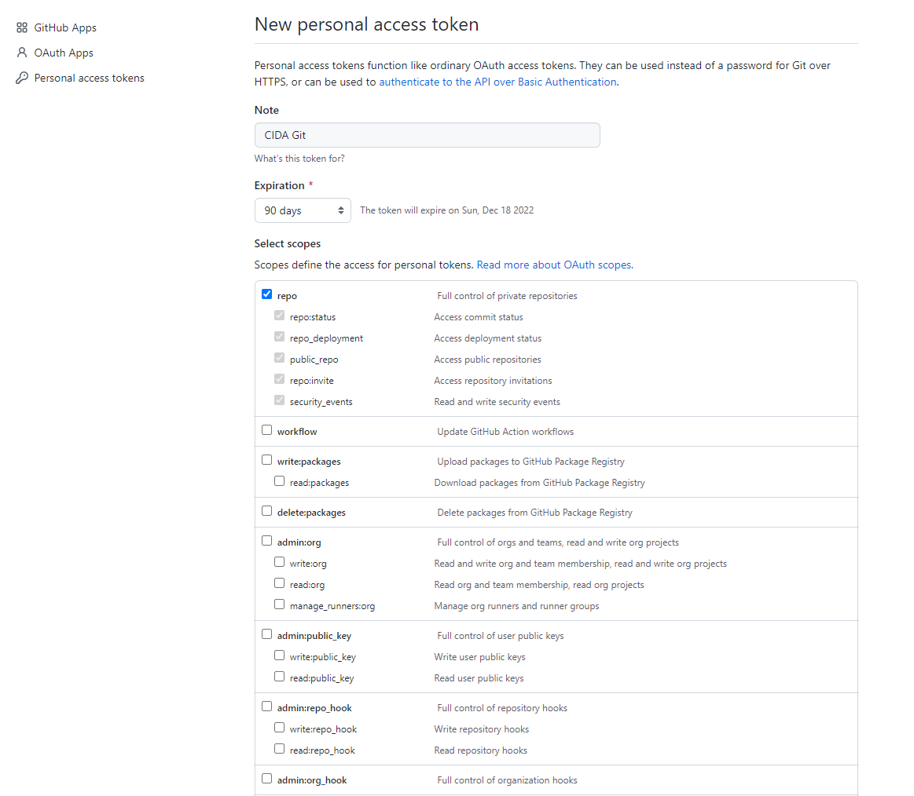
Ideally, you should be able to automatically connect to GitHub without generating a personal access token, but GitKraken is moderately cursed.
Once you have successfully connected to GitHub, you will then need to generate an SSH key and add to GitHub. To do this, simply click the “Generate SSH key and add to GitHub” button (optionally adding a title to the SSH key if you wish). If this step is successful, you will receive a notification within GitKraken on the lower left, and your screen will now display the SSH key within GitKraken and under the Settings -> SSH and GPG keys tab on your GitHub:
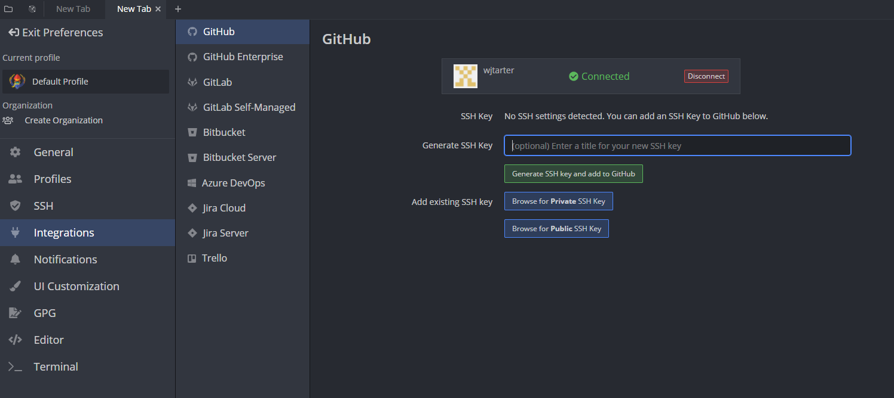
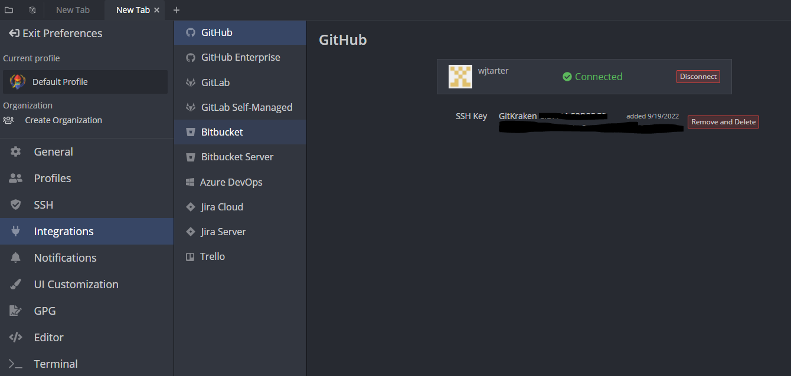
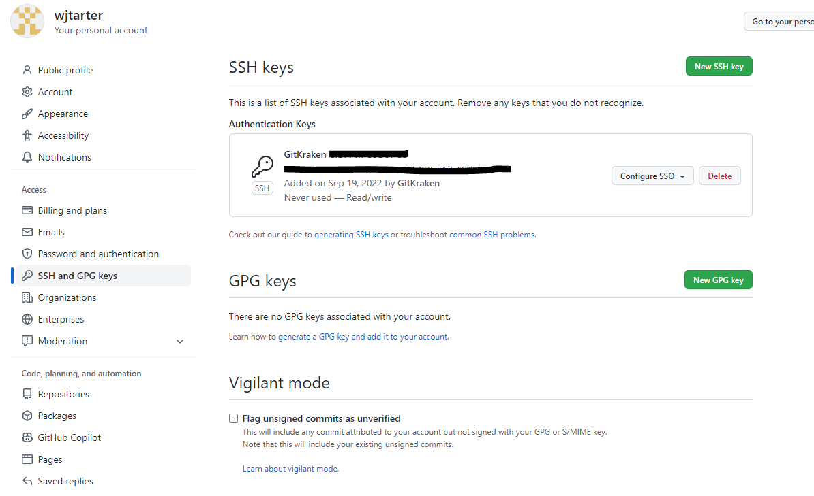
Congratulations, you should be successfully linked to the CIDA GitHub!
From here, you can open, clone, and initiate repositories from the CIDA Github using the, you guessed it, Open a repo, Clone a repo, and Start a local repo options on the home screen:
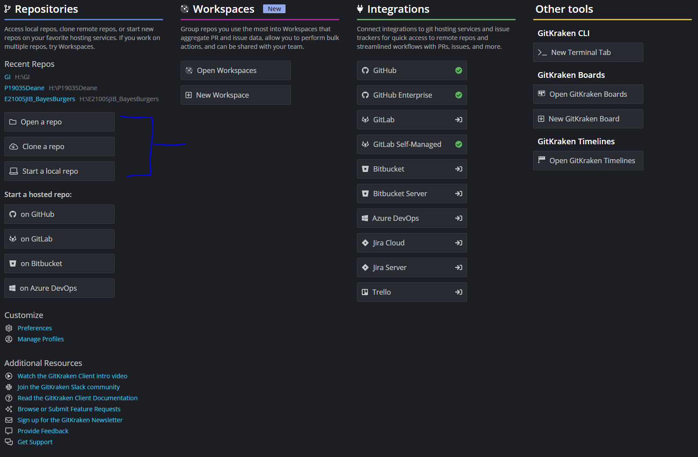
If you are going to clone a repo, just make sure you are on the GitHub.com section, and that you select the CIDA repository to clone, as well as where you would like to clone it to (H: or P: drives, or elsewhere).
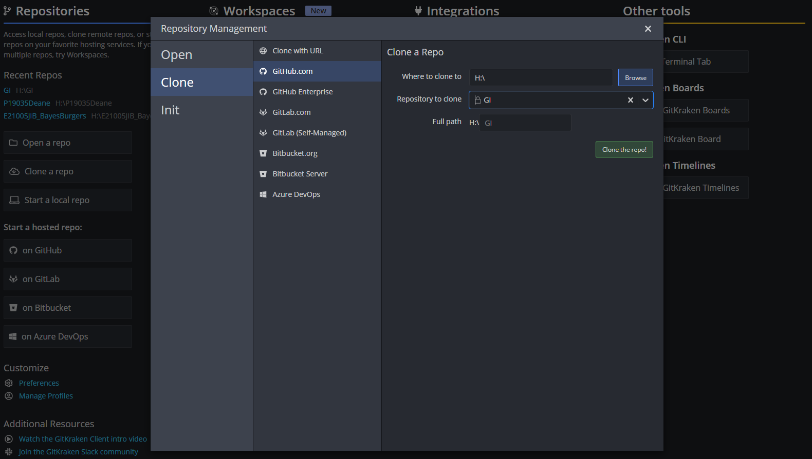
First, however, you will need to generate another SSH key on GitKraken to add to your GitHub (at least this is the only way that I can figure). Go to Preferences -> SSH and then generate a new Private/Public Key, or copy the SSH Public Key if you already have one:
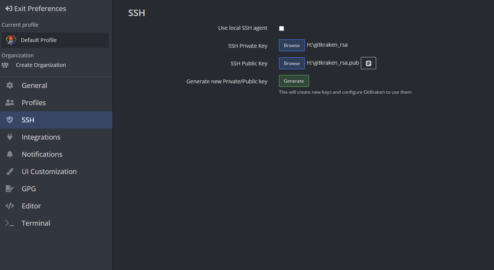
Then return to your GitHub account, and click on SSH and GPG keys under the settings, click Add new key, and then copy the SSH key into the Key box. You will then need to Authorize it with the SSO. After that, you should be able to clone, open, and initialize your repos!
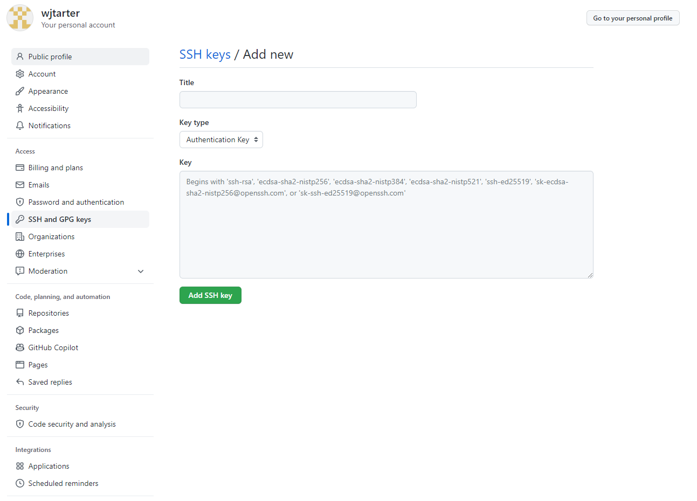
Once you have cloned a repo, you can open it to push/pull any changes. This is done pretty simply via the push or pull commands on the top after opening the repo.
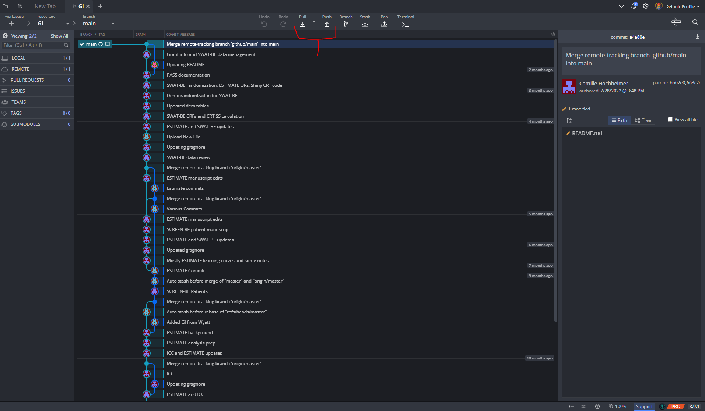
For more details on how to manage pull, push, branching, and other features, visit https://help.gitkraken.com/gitkraken-client/github-gitkraken-client/